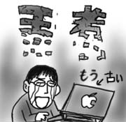
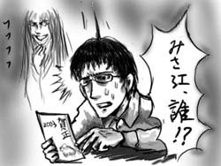

日本時間の本日午前2時からMac World EXPO SFで基調講演が行われ，その模様はいつも通りネット中継されたのですが，残念ながら何度トライしても繋がらずあきらめて寝てしまったのでした．
というわけで，朝起きてすぐにAppleのページを確認してみたところ，11月に新しいラインナップになったばかりだというのに，もう新しいPowerBookG4が発表になっているではありませんか！
斯くして自分史上初めて即決で購入した最上位機種は，PowerBook史上類を見ない早さでその王座を奪われました．三日天下とはこのことだ！さすが！

新しいPowerBookは光るキーボードがやりすぎ(褒)ですが，ビデオカード以外はスペックに大差がないことと，僕の買った15"のモデルが据え置きのままだったことで救われました．価格は据え置きではないですが(ドクロ)．15"モデルまで最新筐体に置き換わっていたら涙で仕事どころではなかったでしょうな！
ということを西原さんに言ったところ「そうなっていたら物凄い数のサイコロックが見えちゃうくらい引きこもっていただろうな！」というようなことを言われました．さすが「逆転裁判２」をクリアしたばかりの西原さんです(貸しました)．
あと，17歳時のななかの声はもっと低いと思います(挨拶)．
本日実家より帰還しました．実家ではADSL＋無線LAN導入大臣として八面六臂の大活躍．ADSLモデムやプリンタを置く用の棚まで買い出しに出かける力の入れようでした．
帰りの飛行機に搭乗して座っていると，ワルそなヤツらはだいたい友達っぽい風貌の二人組(以降ヒップとホップと呼称)がやって来て，僕の前の窓際席と前の前の窓際席に座り，前の方のヒップが後ろのホップを振り返ってデカい声で「バッカ，オメェ急がなくてもちゃんと座れたダロ？」などと話し込み始めました．「さすがヒップにホップだ．話し方もだいたい悪そうだなぁ」と思いながら座っていると，今度は女性がやって来て，ホップの隣の通路側席に座りながら「あれ？久しぶりー」とホップに声をかけました．どうやら女性はホップの高校時代のクラスメートらしく，最近何してるの？といったような会話に花を咲かせはじめました．
ここで俄然目が輝きだしたヒップ．「名前なんていうの？」とか「どこに住んでいるの？」とか，次々とホップの会話に割り込みをかけます．ベルト着用サインと同様にナンパ落葉サインも点灯して欲しいと思いました．
部屋に戻って来ると年賀状が届いていました．全3通．これが僕が今年もらった年賀状の全てです．
今のアパートの管理人さんからも年賀状が届いていたのですが，宛先には
「ミズグチ タクヤ様
みさえ様」
と書かれています．みさえ誰ッ！！！

いつの間に僕は結婚していましたか．というか僕の戸籍はキレイですか？
通常は見えない人と一緒に生活しているのでは，と不安でいっぱいになり，思わず大家さんに確認の電話をするところでした．結婚もしていない相手の名前を宛先に並んで書かれるよりは，買ってもいない宝くじに当たりたかった．そういうスタートを僕は切りたかった．2003年も良い年です．